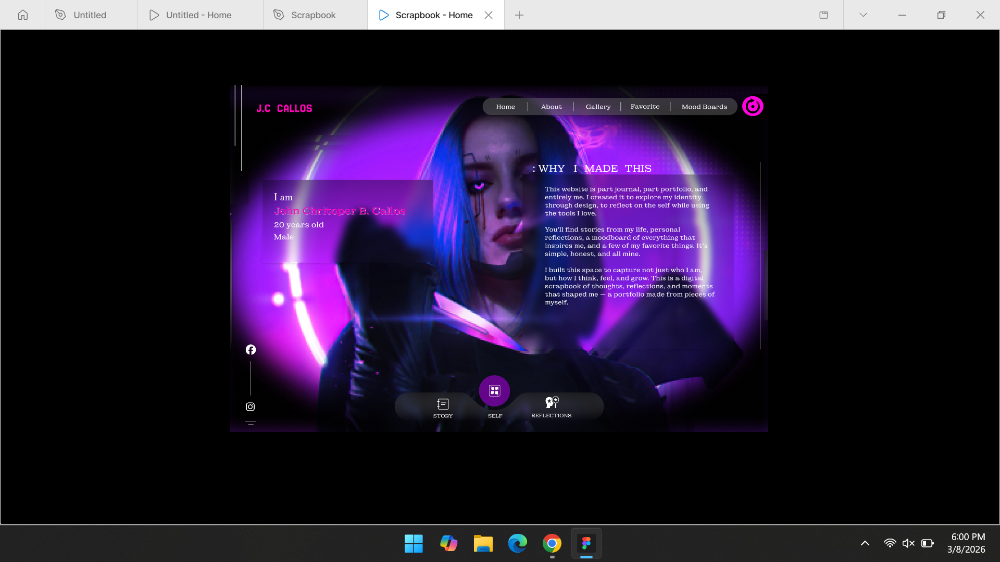
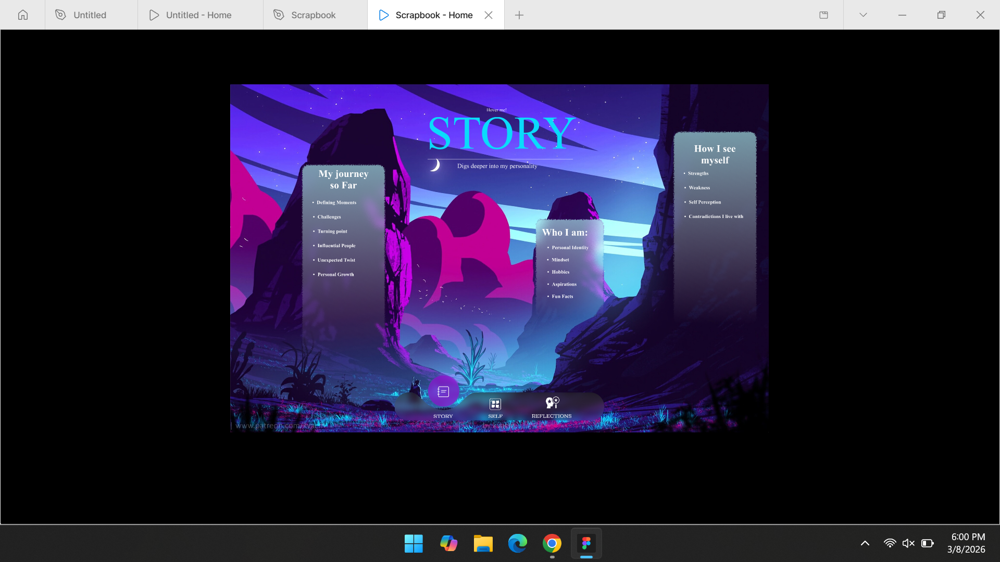

UI / UX
Scrapbook Prototype



OVERVIEW
The Scrapbook Prototype is a Figma-based UI/UX project designed to replicate the nostalgic, tactile feel of a physical journal within a digital interface. The goal was to create a personalized space for users to document memories, utilizing a "free-form" design aesthetic that breaks away from standard rigid grid layouts while maintaining an intuitive user experience.
KEY FEATURES
- Dynamic Grid Layout: Despite the organic look, I implemented an underlying grid to ensure that photo clusters and text blocks remained balanced and legible across the screen.
Component-Based Design: To maintain consistency, I built reusable components for frequently used elements like photo frames, date stamps, and decorative stickers.
Layered Mixed-Media Aesthetic: I curated a collection of digital assets—including polaroid frames, "washi tape" accents, and paper textures—to give the interface a realistic, handmade quality.
WHAT I LEARNED
- The Importance of Texture in UI: I experimented with how shadows, paper grains, and overlapping elements can create a sense of depth. This sharpened my ability to use "skeuomorphic" elements to make digital interfaces feel more human and approachable.
Breaking the Grid (Responsibly): This project taught me how to design "organic" layouts. I learned that even a messy, scrapbook-style design needs a logical flow and focal points to prevent the user from feeling overwhelmed.
TOOLS USED
Figma